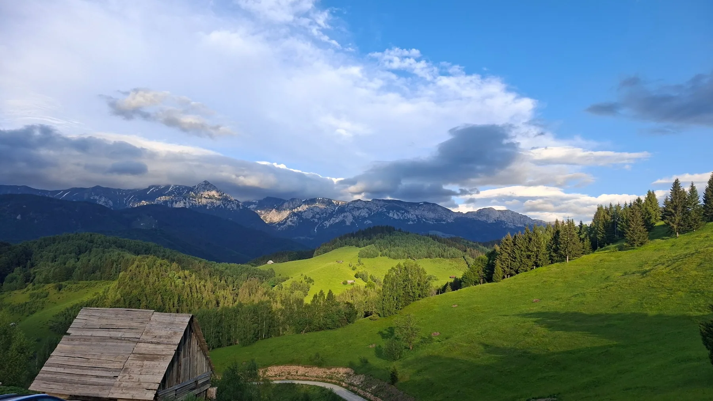
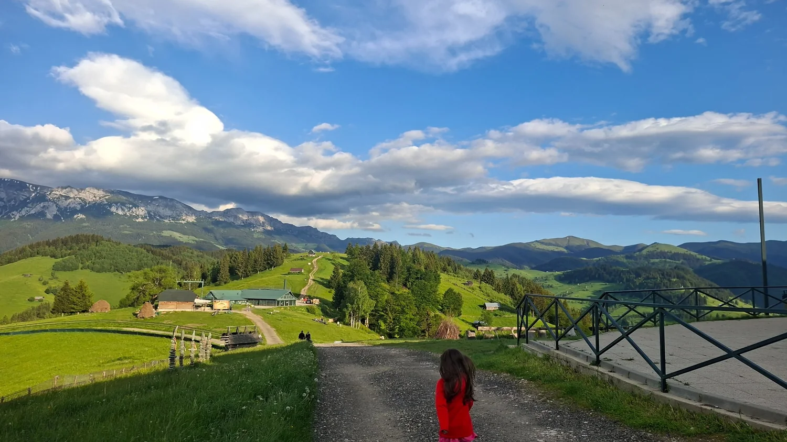

Plimbări cu mașina pe drumuri de munte
Descoperă drumurile dintre Bran și Moieciu, cu opriri pentru priveliști și fotografii.
Descoperă exemple de tururi private cu preluare și întoarcere la cazare. Alege ce te atrage și construim împreună o zi în ritmul tău.
Descoperă drumurile dintre Bran și Moieciu, cu opriri pentru priveliști și fotografii.

Mergi printre porți de lemn, fânețe și casele răsfirate din Măgura și Peștera.

Putem construi ziua în jurul Castelului Bran sau putem include Peleș, Râșnov și locuri mai liniștite de pe drum.

Lasă timp pentru un prânz la sat, brânzeturi din zonă și o felie de plăcintă de casă.

Alege o plimbare ușoară prin pădure sau un traseu montan mai lung, în ritmul tău.

Prinde ultima oră de lumină pe dealurile de deasupra Moieciului. Ia cu tine aparatul foto și o haină călduroasă.

Străbate cheile pe sub pereții de calcar ai Pietrei Craiului.

Întreabă-mă despre o plimbare lângă Râșnov, cu un partener local de echitație.

Putem adăuga o oprire la tiroliană în ziua prin sate, în funcție de disponibilitate.

Întreabă-mă despre sesiuni de escaladă cu un partener local specializat.

Putem opri la Cheile Grădiștei pentru o tură cu sania pe șine, când instalația este deschisă.

Stabilim transferurile, opririle peste noapte și traseul prin zona Brașovului sau prin Apuseni.